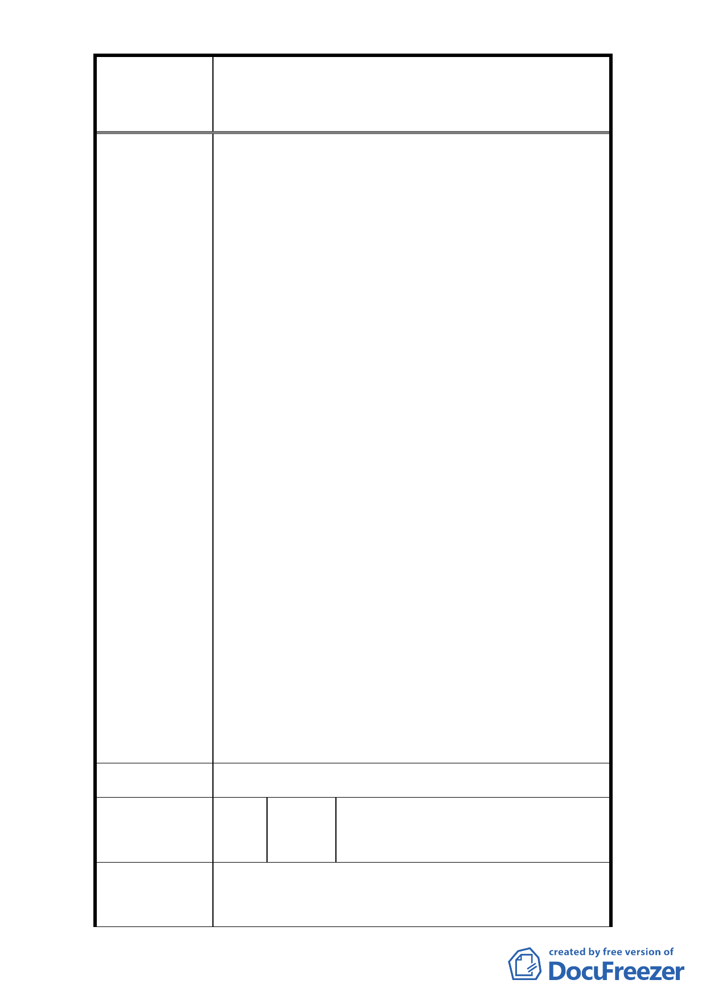

修訂臺北市大安區青田街保存區聚落風貌保存專用區細部計
案
名
畫、變更部分第三種住宅區、第三種商業區(特)為第三種住宅區
(特)(日式宿舍)及第三種商業區(特)(日式宿舍)暨劃定週邊地
區都市設計管制細部計畫案
1. 本計畫地區內含括 11 處文化資產，為維護本地區
整體歷史風貌，仍建議維持部分都市設計以及容積
管控機制，但本次修訂計畫將採回歸計畫範圍於幾
處核心區域，或是僅就文化資產周邊土地進行管
制，則仍需針對範圍以及管制機制進行討論。
2. 為保存區內眾多老樹，故本次修訂計畫內增加有關
樹木保護之規定。
(1) 本計畫區範圍內建築基地內達受保護樹木標準之
樹木，應依「臺北市樹木保護自治條例」及「臺
北市土地使用分區管制自治條例」規定辦理，其
未達受保護樹木標準之植栽基於維繫街區整體
風貌，經本府文化局指定者，應比照樹木保護自
治條例規定辦理。
(2) 本計畫區內未指定或登錄為文化資產之日式宿舍
市府回覆意見
進行開發時，應調查並提送基地內之喬木樹籍資
料，提送相關保護計畫經本府文化局審查同意後
始得施作。
3.96 年 8 月 9 日公告之「修訂臺北市大安區青田街保
存區聚落風貌保存專用區細部計畫、變更部分第三
種住宅區、第三種商業區(特)為第住宅區(特)(日式
宿舍)及第三種商業區(特)(日式宿舍)暨劃定週邊
地區都市設計管制細部計畫案」即允許保存區、聚
落 風 貌 保 存 專 用 區 、 第 三 種 住 宅 區 ( 特 )( 日 式 宿
舍)、第三種商業區(特)(日式宿舍)得文化產業展
售、文化交誼、多功能表演、展覽、會議、研討等
相關使用，由於其使用且此區日式宿舍之規模不
大，且其作為上述文化相關使用需經本市文化資產
主管機關核准，另除上述文化相關使用外，仍應依
都市計畫土管規定辦理，故不致導致提及之問題。
委 員 會 決 議 依市府回覆意見辦理。
諸紀平、大安區龍安里里長洪秋
編 號 26 陳情人 甲、曾瓊芳、周賢溪、楊劉秀桃、
柯慧敏等 16 人
1. (1)本區住三土地建蔽率為 45%，因鄰近日式宿舍聚
陳 情 理 由 落可能限制高度。(2)本區容積率因古蹟而被限
建，取消停獎及容積移轉，即使現在還原住三作業
- 31 -